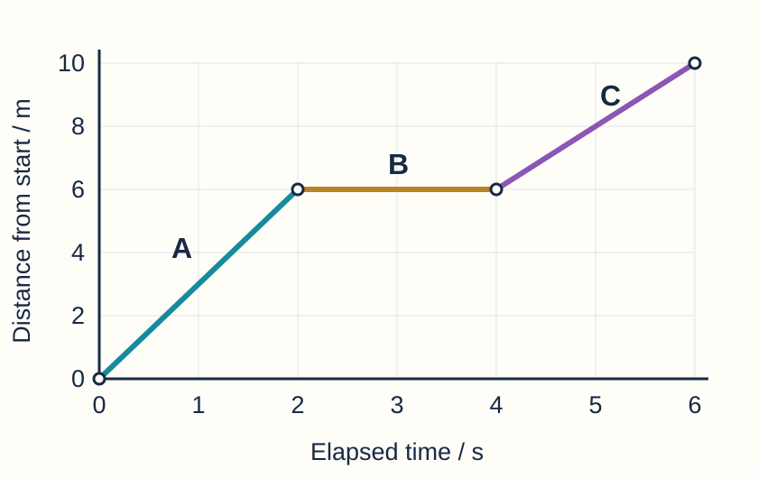

Year 9 Science · Lesson 2 · Original classroom questions · 10 marks
Make sense of the journey
Work alone. Read the provided graph and write answers 1–5 in your book. You do not need to draw a graph.

Original classroom model. The object travels along a straight route away from the start. Each joined section is straight. This is a new graph, not the ramp data.
Your questions
- Read the distance at 4 s. [1]
Include the unit.
- Describe the motion from 2 s to 4 s. [2]
Use two distance readings as evidence.
- Which section is fastest? Explain. [2]
Use a feature of the graph, not the highest point.
- Calculate the speed during C. [2]
Show how you use both endpoints and give the unit.
- Calculate the whole-journey average speed. [3]
Show your working and unit. Explain why you chose that time.
Model answer & mark scheme
Original classroom scheme · 10 marks. Equivalent correct wording is accepted.
- 6 m. (1)
- Stationary (1), because distance stays at 6 m from 2 to 4 s (1).
- A (1), because it is the steepest section / covers the most distance each second (1).
- C: (10 − 6) ÷ (6 − 4), or 4 ÷ 2 (1); 2 m/s (1).
- 10 ÷ 6 (1); 1.67 m/s or 1⅔ m/s (1); all 6 seconds count, including the 2-second stop (1).